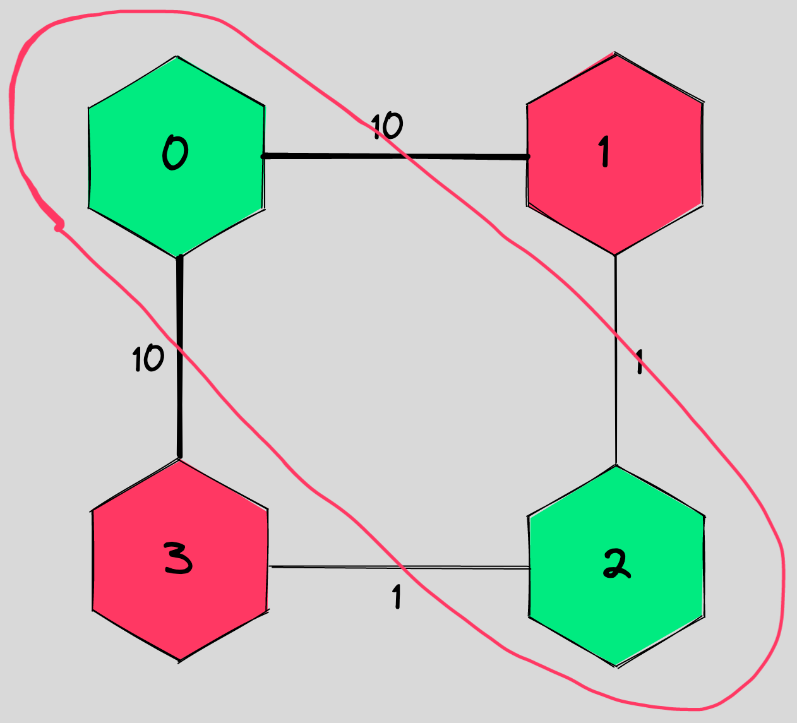
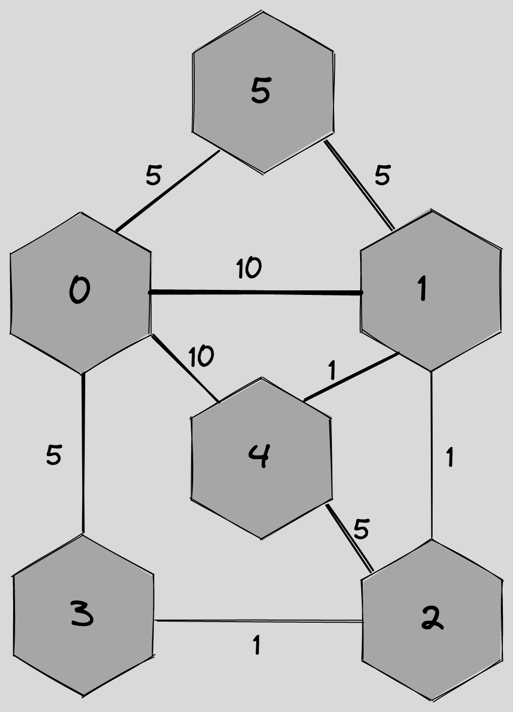

Solving MaxCut with QAOA
Solving MaxCut with QAOA#
It’s 3 in the morning and your boss calls you, waking you up from your sleep: “I got a problem I need you to solve.”
Okay, what could this be?
“I need to cut a graph in a way that maximizes the value of the edges cut”
Ahhhh this dream again.
In all seriousness, what I’m describing here is called the MaxCut problem. Given some graph, we want to cut it into two parts so that the value of the “cut” edges is maximized. For instance, let’s take this graph:

How could you split each of the nodes into one of two categories such that the line that circles one category (but not the other) cuts edges in such a way that the sum of the edges is maximized?
Maybe you saw the answer right away: if we circle the nodes on the top right and bottom left of the graph, we cut through all of the edges!
{kind=link}
That was a pretty easy example, but now try to find a solution for this one:
{kind=link}
All I’ve done is add 2 nodes and a couple edges to connect them up to the graph (plus changing one edge weight), but the problem has become significantly harder! You can see why this problem will get very computationally expensive very quickly. I don’t know about you, but I’d rather not sit here and try to solve that by hand. Let’s make Orquestra Core do it for us!
The Quantum Approximate Optimization Algorithm is a heuristic quantum algorithm that is believed to offer some advantage in solving optimization problems. It’s also very easy to work with in Orquestra! We can use that to try to solve this maxcut problem.
Let’s start by creating a new python file called qaoa_maxcut.py. The first thing we’ll do is import all the necessary packages:
from collections import Counter
import networkx as nx
import numpy as np
from orquestra.integrations.cirq.simulator import CirqSimulator
from orquestra.opt.optimizers import ScipyOptimizer
from orquestra.opt.problems.maxcut import MaxCut
from orquestra.quantum.estimation import calculate_exact_expectation_values
from orquestra.vqa.ansatz.qaoa_farhi import QAOAFarhiAnsatz
from orquestra.vqa.cost_function.cost_function import (
create_cost_function,
substitution_based_estimation_tasks_factory,
)
from icecream import ic
Note
icecream (and ic) is like print, but offers more information about what is being printed. It’s great for debugging! Just install it with pip install icecream
If you would rather just use print, everything in this tutorial should still work! Just replace ic() with print() and all will be well.
Now that the imports are out of the way, we can start by making a function that defines our graph. We use the networkx / nx package for this:
def create_harder_graph():
graph = nx.Graph()
graph.add_nodes_from([0, 1, 2, 3, 4, 5])
graph.add_edge(0, 1, weight=10)
graph.add_edge(0, 3, weight=5)
graph.add_edge(1, 2, weight=1)
graph.add_edge(2, 3, weight=1)
# YOUR CODE HERE
That code only makes the simpler, box-looking graph from the easy maxcut example. In your own code, in new lines after the # YOUR CODE HERE, go ahead and add the remaining lines of the function to define edges between the new nodes I added in the harder problem.
Hint
You should add 5 more edges to your graph and end the function with a return graph.
Here’s the solution to that little exercise if you want it:
Hint
graph.add_edge(0, 4, weight=10)
graph.add_edge(0, 5, weight=5)
graph.add_edge(1, 4, weight=1)
graph.add_edge(2, 4, weight=5)
graph.add_edge(1, 5, weight=5)
return graph
Now let’s write a function that accepts our graph object and uses QAOA to try to solve it. The first step is to get a description of the problem in a language our quantum computer can understand, we call this the Hamiltonian. We also need a quantum circuit we can train using QAOA, this is called our ansatz.
def solve_maxcut_qaoa(test_graph):
hamiltonian = MaxCut().get_hamiltonian(test_graph)
ansatz = QAOAFarhiAnsatz(2, cost_hamiltonian=hamiltonian)
Notice we didn’t have to build up the Hamiltonian or ansatz ourselves, Orquestra Core just did that for us! MaxCut isn’t the only problem we can do that for, either. The opt part of Orquestra Core has a number of problems readily solvable like graph partition and vertex cover. Similarly, we can select from a number of ansatzes
Next, we need to define how the QAOA will estimate expectation values, and create a set of tasks to do that:
estimation_method = calculate_exact_expectation_values
estimation_task_factory = substitution_based_estimation_tasks_factory(
hamiltonian, ansatz
)
Now we can select which backend we want to run on and which optimizer we want to use:
backend = CirqSimulator()
optimizer = ScipyOptimizer(method="L-BFGS-B")
If you want to use a different optimizer, you can certainly do that. And if you want to run on a different backend, you can do so easily! In fact, in your own code, try using the Qiskit Aer Statevector simulator. If you don’t remember how to do that, take a look at the Running Circuits on a Backend tutorial again.
Hint
Rememember that you’ll need to import the QiskitSimulator at the top of your file and change CirqSimulator() to QiskitSimulator(aer_simulator_statevector)
The last steps before running the circuit are to minimize the cost of the parameters for the circuit and get runnable circuit:
cost_function = create_cost_function(
backend,
estimation_task_factory,
estimation_method,
)
initial_params = np.ones(ansatz.number_of_params) * np.pi / 5
opt_results = optimizer.minimize(cost_function, initial_params)
circuit = ansatz.get_executable_circuit(opt_results.opt_params)
Now that we have those parameters, we can actually run the circuit! Write a line in your own code that runs the circuit on the backend 10000 times and stores the results in a variable called measurements.
Hint
That line should look like this:
measurements = backend.run_circuit_and_measure(circuit, n_samples=10000)
Finally, we can get the most common result from our runs and return that:
counter = Counter(measurements.bitstrings)
most_common_string = counter.most_common()[0][0]
return most_common_string
Finally, at the end of the file, put a couple lines to call the functions we made and output the result. Try writing these lines by yourself, and check them with the answer below:
Hint
test_graph = create_harder_graph()
most_common_string = solve_maxcut_qaoa(test_graph)
ic(most_common_string)
The output should be most_common_string: (0, 1, 0, 1, 1, 1) or most_common_string: (1, 0, 1, 0, 0, 0) which corresponds to nodes 0 and 2 being one color, and the remaining nodes being another color. That looks like this graphically:

If you want to see all of the code put together, here it is:
Hint
################################################################################
# © Copyright 2022 Zapata Computing Inc.
# modified from tests/qaoa_maxcut_test.py
################################################################################
from collections import Counter
import networkx as nx
import numpy as np
from orquestra.integrations.cirq.simulator import CirqSimulator
from orquestra.opt.optimizers import ScipyOptimizer
from orquestra.opt.problems.maxcut import MaxCut
from orquestra.quantum.estimation import calculate_exact_expectation_values
from orquestra.vqa.ansatz.qaoa_farhi import QAOAFarhiAnsatz
from orquestra.vqa.cost_function.cost_function import (
create_cost_function,
substitution_based_estimation_tasks_factory,
)
from icecream import ic
def create_simple_graph():
"""
[0] --10-- [1]
| |
10 1
| |
[3] --1 -- [2]
"""
graph = nx.Graph()
graph.add_nodes_from([0, 1, 2, 3])
graph.add_edge(0, 1, weight=10)
graph.add_edge(0, 3, weight=10)
graph.add_edge(1, 2, weight=1)
graph.add_edge(2, 3, weight=1)
return graph
def create_harder_graph():
graph = nx.Graph()
graph.add_nodes_from([0, 1, 2, 3, 4, 5])
graph.add_edge(0, 1, weight=10)
graph.add_edge(0, 3, weight=5)
graph.add_edge(1, 2, weight=1)
graph.add_edge(2, 3, weight=1)
# YOUR CODE HERE
graph.add_edge(0, 4, weight=10)
graph.add_edge(0, 5, weight=5)
graph.add_edge(1, 4, weight=1)
graph.add_edge(2, 4, weight=5)
graph.add_edge(1, 5, weight=5)
return graph
def solve_maxcut_qaoa(test_graph):
hamiltonian = MaxCut().get_hamiltonian(test_graph)
ansatz = QAOAFarhiAnsatz(2, cost_hamiltonian=hamiltonian)
estimation_method = calculate_exact_expectation_values
estimation_task_factory = substitution_based_estimation_tasks_factory(
hamiltonian, ansatz
)
backend = CirqSimulator()
optimizer = ScipyOptimizer(method="L-BFGS-B")
cost_function = create_cost_function(
backend,
estimation_task_factory,
estimation_method,
)
initial_params = np.ones(ansatz.number_of_params) * np.pi / 5
opt_results = optimizer.minimize(cost_function, initial_params)
circuit = ansatz.get_executable_circuit(opt_results.opt_params)
measurements = backend.run_circuit_and_measure(circuit, n_samples=10000)
counter = Counter(measurements.bitstrings)
most_common_string = counter.most_common()[0][0]
return most_common_string
test_graph = create_harder_graph()
most_common_string = solve_maxcut_qaoa(test_graph)
ic(most_common_string)
And there we have it! Instead of having to do that optimization ourselves, we made a quick Orquestra program to do it for us. Now how to tell your boss in your dream you solved it…